Kanto region pokédex
| Pokédex Number | Pokémon Name | Appearance | Height (m) | Weight (kg) | Type |
|---|---|---|---|---|---|
| #001 | Bulbasaur | 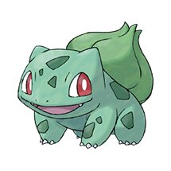 | 0.7 | 6.9 | Grass/Poison |
| #002 | Ivysaur | 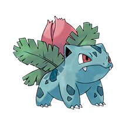 | 1.0 | 13.0 | Grass/Poison |
| #003 | Venusaur | 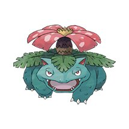 | 2.0 | 100.0 | Grass/Poison |
| #004 | Charmander | 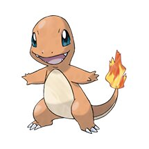 | 0.6 | 8.5 | Fire |
| #005 | Charmeleon | 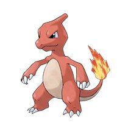 | 1.1 | 19.0 | Fire |
| #006 | Charizard | 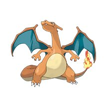 | 1.7 | 90.5 | Fire/Flying |
| #007 | Squirtle | 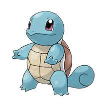 | 0.5 | 9.0 | Water |
| #008 | Wartortle | 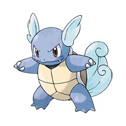 | 1.0 | 22.5 | Water |
| #009 | Blastoise | 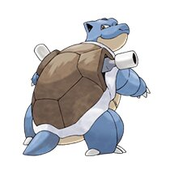 | 1.6 | 85.5 | Water |
| #010 | Caterpie | 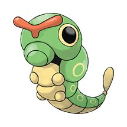 | 0.3 | 2.9 | Bug |
| #011 | Metapod | 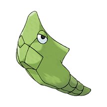 | 0.7 | 9.9 | Bug |
| #012 | Butterfree | 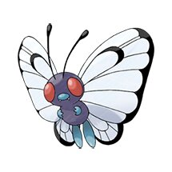 | 1.1 | 32.0 | Bug/Flying |
| #013 | Weedle | 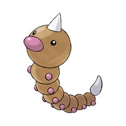 | 0.3 | 3.2 | Bug/Poison |
| #014 | Kakuna | 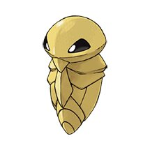 | 0.6 | 10.0 | Bug/Poison |
| #015 | Beedrill | 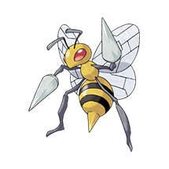 | 1.0 | 29.5 | Bug/Poison |
| #016 | Pidgey | 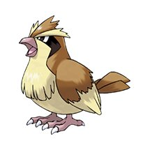 | 0.3 | 1.8 | Normal/Flying |
| #017 | Pidgeotto | 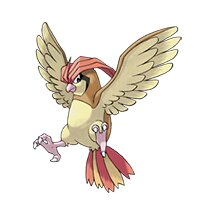 | 1.1 | 30.0 | Normal/Flying |
| #018 | Pidgeot | 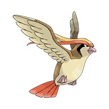 | 1.5 | 39.5 | Normal/Flying |
| #019 | Rattata | 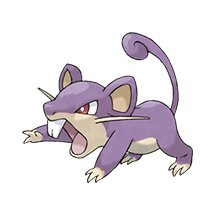 | 0.3 | 3.5 | Normal |
| #020 | Raticate | 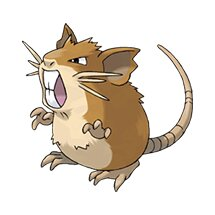 | 0.7 | 18.5 | Normal |
| #021 | Spearow | 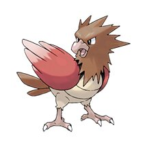 | 0.3 | 2.0 | Normal/Flying |
| #022 | Fearow | 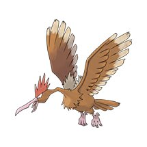 | 1.2 | 38.0 | Normal/Flying |
| #023 | Ekans | 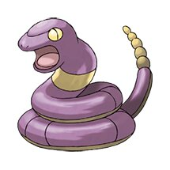 | 2.0 | 6.9 | Poison |
| #024 | Arbok | 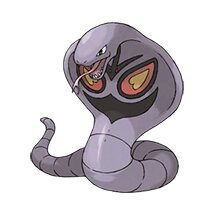 | 3.5 | 65.0 | Poison |
| #025 | Pikachu | 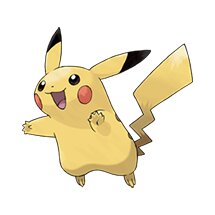 | 0.4 | 6.0 | Electric |
| #026 | Raichu | 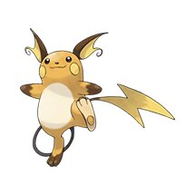 | 0.8 | 30.0 | Electric |
| #027 | Sandshrew | 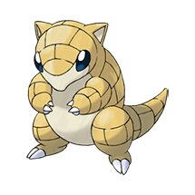 | 0.6 | 12.0 | Ground |
| #028 | Sandslash | 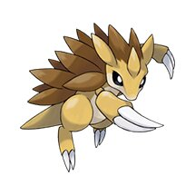 | 1.0 | 29.5 | Ground |
| #029 | Nidoran♀ | 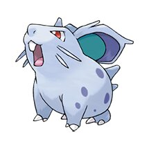 | 0.4 | 7.0 | Poison |
| #030 | Nidorina | 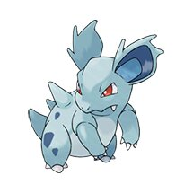 | 0.8 | 20.0 | Poison |
| #031 | Nidoqueen | 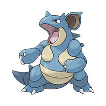 | 1.3 | 60.0 | Poison/Ground |
| #032 | Nidoran♂ | 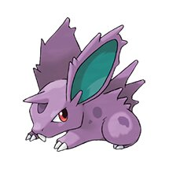 | 0.5 | 9.0 | Poison |
| #033 | Nidorino | 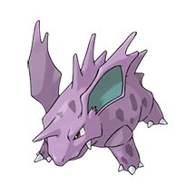 | 0.9 | 19.5 | Poison |
| #034 | Nidoking | 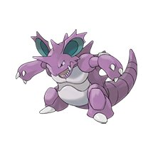 | 1.4 | 62.0 | Poison/Ground |
| #035 | Clefairy | 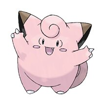 | 0.6 | 7.5 | Fairy |
| #036 | Clefable | 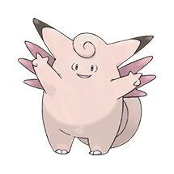 | 1.3 | 40.0 | Fairy |
| #037 | Vulpix | 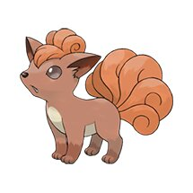 | 0.6 | 9.9 | Fire |
| #038 | Ninetales | 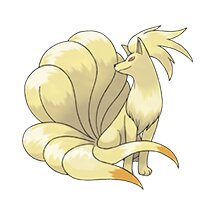 | 1.1 | 19.9 | Fire |
| #039 | Jigglypuff | 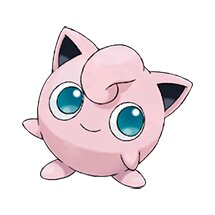 | 0.5 | 5.5 | Normal/Fairy |
| #040 | Wigglytuff | 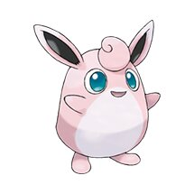 | 1.0 | 12.0 | Normal/Fairy |
| #041 | Zubat | 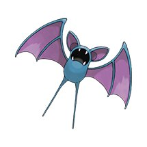 | 0.8 | 7.5 | Poison/Flying |
| #042 | Golbat | 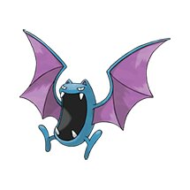 | 1.6 | 55.0 | Poison/Flying |
| #043 | Oddish | 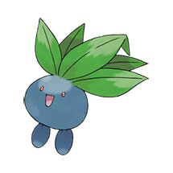 | 0.5 | 5.4 | Grass/Poison |
| #044 | Gloom | 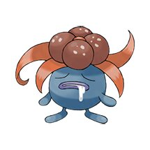 | 0.8 | 8.6 | Grass/Poison |
| #045 | Vileplume | 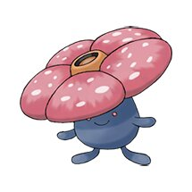 | 1.2 | 18.6 | Grass/Poison |
| #046 | Paras | 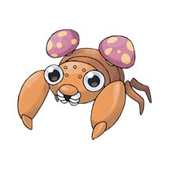 | 0.3 | 5.4 | Bug/Grass |
| #047 | Parasect | 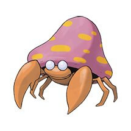 | 1.0 | 29.5 | Bug/Grass |
| #048 | Venonat | 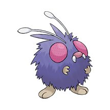 | 1.0 | 30.0 | Bug/Poison |
| #049 | Venomoth | 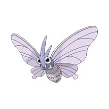 | 1.5 | 12.5 | Bug/Poison |
| #050 | Diglett | 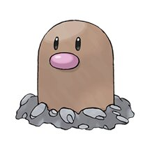 | 0.2 | 0.8 | Ground |
| #051 | Dugtrio | 0.7 | 33.3 | Ground | |
| #052 | Meowth | 0.4 | 4.2 | Normal | |
| #053 | Persian | 1.0 | 32.0 | Normal | |
| #054 | Psyduck | 0.8 | 19.6 | Water | |
| #055 | Golduck | 1.7 | 76.6 | Water | |
| #056 | Mankey | 0.5 | 28.0 | Fighting | |
| #057 | Primeape | 1.0 | 32.0 | Fighting | |
| #058 | Growlithe | 0.7 | 19.0 | Fire | |
| #059 | Arcanine | 1.9 | 155.0 | Fire | |
| #060 | Poliwag | 0.6 | 12.4 | Water | |
| #061 | Poliwhirl | 1.0 | 20.0 | Water | |
| #062 | Poliwrath | 1.3 | 54.0 | Water/Fighting | |
| #063 | Abra | 0.9 | 19.5 | Psychic | |
| #064 | Kadabra | 1.3 | 56.5 | Psychic | |
| #065 | Alakazam | 1.5 | 48.0 | Psychic | |
| #066 | Machop | 0.8 | 19.5 | Fighting | |
| #067 | Machoke | 1.5 | 70.5 | Fighting | |
| #068 | Machamp | 1.6 | 130.0 | Fighting | |
| #069 | Bellsprout | 0.7 | 4.0 | Grass/Poison | |
| #070 | Weepinbell | 1.0 | 6.4 | Grass/Poison | |
| #071 | Victreebel | 1.7 | 15.5 | Grass/Poison | |
| #072 | Tentacool | 0.9 | 45.5 | Water/Poison | |
| #073 | Tentacruel | 1.6 | 55.0 | Water/Poison | |
| #074 | Geodude | 0.4 | 20.0 | Rock/Ground | |
| #075 | Graveler | 1.0 | 105.0 | Rock/Ground | |
| #076 | Golem | 1.4 | 300.0 | Rock/Ground | |
| #077 | Ponyta | 1.0 | 30.0 | Fire | |
| #078 | Rapidash | 1.7 | 95.0 | Fire | |
| #079 | Slowpoke | 1.2 | 36.0 | Water/Psychic | |
| #080 | Slowbro | 1.6 | 78.5 | Water/Psychic | |
| #081 | Magnemite | 0.3 | 6.0 | Electric/Steel | |
| #082 | Magneton | 1.0 | 60.0 | Electric/Steel | |
| #083 | Farfetch'd | 0.8 | 15.0 | Normal/Flying | |
| #084 | Doduo | 1.4 | 39.2 | Normal/Flying | |
| #085 | Dodrio | 1.8 | 85.2 | Normal/Flying | |
| #086 | Seel | 1.1 | 90.0 | Water | |
| #087 | Dewgong | 1.7 | 120.0 | Water/Ice | |
| #088 | Grimer | 0.9 | 30.0 | Poison | |
| #089 | Muk | 1.2 | 30.0 | Poison | |
| #090 | Shellder | 0.3 | 4.0 | Water | |
| #091 | Cloyster | 1.5 | 132.5 | Water/Ice | |
| #092 | Gastly | 1.3 | 0.1 | Ghost/Poison | |
| #093 | Haunter | 1.6 | 0.1 | Ghost/Poison | |
| #094 | Gengar | 1.5 | 40.5 | Ghost/Poison | |
| #095 | Onix | 8.8 | 210.0 | Rock/Ground | |
| #096 | Drowzee | 1.0 | 32.4 | Psychic | |
| #097 | Hypno | 1.6 | 75.6 | Psychic | |
| #098 | Krabby | 0.4 | 6.5 | Water | |
| #099 | Kingler | 1.3 | 60.0 | Water | |
| #100 | Voltorb | 0.5 | 10.4 | Electric | |
| #101 | Electrode | 1.2 | 66.6 | Electric | |
| #102 | Exeggcute | 0.4 | 2.5 | Grass/Psychic | |
| #103 | Exeggutor | 2.0 | 120.0 | Grass/Psychic | |
| #104 | Cubone | 0.4 | 6.5 | Ground | |
| #105 | Marowak | 1.0 | 45.0 | Ground | |
| #106 | Hitmonlee | 1.5 | 49.8 | Fighting | |
| #107 | Hitmonchan | 1.4 | 50.2 | Fighting | |
| #108 | Lickitung | 1.2 | 65.5 | Normal | |
| #109 | Koffing | 0.6 | 1.0 | Poison | |
| #110 | Weezing | 1.2 | 9.5 | Poison | |
| #111 | Rhyhorn | 1.0 | 115.0 | Ground/Rock | |
| #112 | Rhydon | 1.9 | 120.0 | Ground/Rock | |
| #113 | Chansey | 1.1 | 34.6 | Normal | |
| #114 | Tangela | 1.0 | 35.0 | Grass | |
| #115 | Kangaskhan | 2.2 | 80.0 | Normal | |
| #116 | Horsea | 0.4 | 8.0 | Water | |
| #117 | Seadra | 1.2 | 25.0 | Water | |
| #118 | Goldeen | 0.6 | 15.0 | Water | |
| #119 | Seaking | 1.3 | 39.0 | Water | |
| #120 | Staryu | 0.8 | 34.5 | Water | |
| #121 | Starmie | 1.1 | 80.0 | Water/Psychic | |
| #122 | Mr. Mime | 1.3 | 54.5 | Psychic/Fairy | |
| #123 | Scyther | 1.5 | 56.0 | Bug/Flying | |
| #124 | Jynx | 1.4 | 40.6 | Ice/Psychic | |
| #125 | Electabuzz | 1.1 | 30.0 | Electric | |
| #126 | Magmar | 1.3 | 44.5 | Fire | |
| #127 | Pinsir | 1.5 | 55.0 | Bug | |
| #128 | Tauros | 1.4 | 88.4 | Normal | |
| #129 | Magikarp | 0.9 | 10.0 | Water | |
| #130 | Gyarados | 6.5 | 235.0 | Water/Flying | |
| #131 | Lapras | 2.5 | 220.0 | Water/Ice | |
| #132 | Ditto | 0.3 | 4.0 | Normal | |
| #133 | Eevee | 0.3 | 6.5 | Normal | |
| #134 | Vaporeon | 1.0 | 29.0 | Water | |
| #135 | Jolteon | 0.8 | 24.5 | Electric | |
| #136 | Flareon | 0.9 | 25.0 | Fire | |
| #137 | Porygon | 0.8 | 36.5 | Normal | |
| #138 | Omanyte | 0.4 | 7.5 | Rock/Water | |
| #139 | Omastar | 1.0 | 35.0 | Rock/Water | |
| #140 | Kabuto | 0.5 | 11.5 | Rock/Water | |
| #141 | Kabutops | 1.3 | 40.5 | Rock/Water | |
| #142 | Aerodactyl | 1.8 | 59.0 | Rock/Flying | |
| #143 | Snorlax | 2.1 | 460.0 | Normal | |
| #144 | Articuno | 1.7 | 55.4 | Ice/Flying | |
| #145 | Zapdos | 1.6 | 52.6 | Electric/Flying | |
| #146 | Moltres | 2.0 | 60.0 | Fire/Flying | |
| #147 | Dratini | 1.8 | 3.3 | Dragon | |
| #148 | Dragonair | 4.0 | 16.5 | Dragon | |
| #149 | Dragonite | 2.2 | 210.0 | Dragon/Flying | |
| #150 | Mewtwo | 2.0 | 122.0 | Psychic | |
| #151 | Mew | 0.4 | 4.0 | Psychic |
Future Updates
The pokémon listed above originate from the original pokémon games, Red and Blue back, in 1996. They also appeared around the same time in the pokémon anime and movies. Subsequently, more and more pokémon have been added over time. The Gold and Silver games which were the sequel to the original Red and Blue contained 100 new pokémon for people to catch and battle with. Every new release since has had several new pokémon; if I am to update this website over time in increments, I plan to do so by systematically adding pokémon based on the order they were released regarding their appearances in media.
What is this page?
This is the page where I will insert the pokédex interface, which will include the original 151 pokémon. I intend to recreate the appearance of the pokédex from the pokémon games and anime by using tables and lists to help me organize. I want to make the interface as smooth and streamlined as possible. I will include all afformentioned information eventually, even if it does take some time. This Information includes type, weight, height, moves learned, evolutions, items to be held, and more.
Pokédex numbering
Throughout the pokémon franchise, each pokémon is assigned a specific tag number that represent where they are in the pokédex. Pokémon who evolve into each other will almost always be located next to each other when possible. These numbers allow users of the pokédex to quickly locate the pokémon they are looking for, and see how they relate to other pokémon in the pokédex. The pokédex is essentially a database for pokémon and information about them, and this numbering system makes it easier to navigate said database to find what you are looking for.